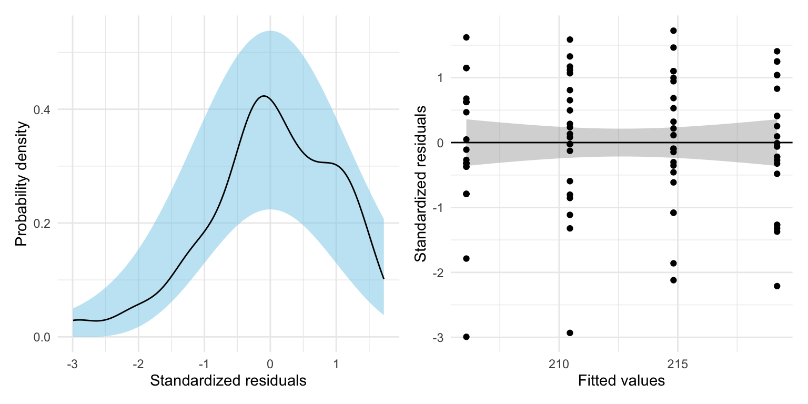
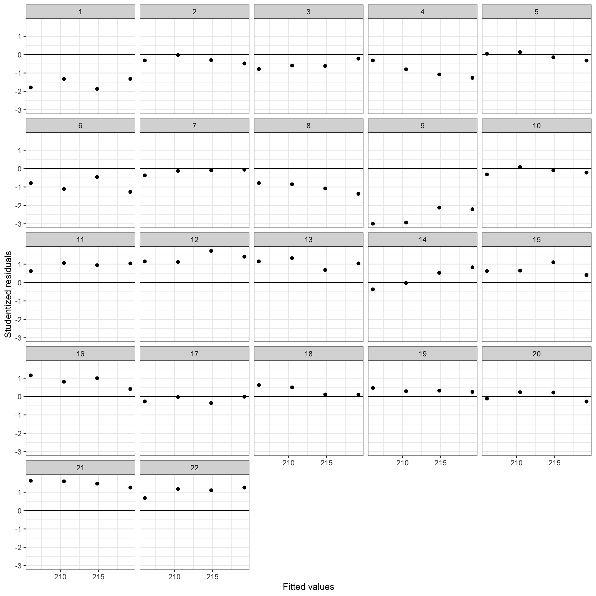

Introduction to Mixed-Effects Models
In this set of notes, you will learn the conceptual ideas behind linear mixed-effects models, also called multilevel models or hierarchical linear models. To do this, we will use data from the file minneapolis.csv.
These data include repeated measurements of vertically scaled reading achievement scores for \(n=22\) students. We will use these data to explore the question of whether students’ reading achievement is changing over time.
# Load libraries
library(broom.mixed) #for tidy, glance, and augment with lmer models
library(educate)
library(lme4) #for fitting mixed-effects models
library(patchwork)
library(tidyverse)
# Import data
mpls = read_csv(file = "https://raw.githubusercontent.com/zief0002/bespectacled-antelope/main/data/minneapolis.csv")
# View data
mplsFixed-Effects Regression Model
To examine the research question of whether students’ reading achivement scores are changing over time, we might try regressing reading achievement scores on grade-level predict using the lm() function. The lm() function fits a fixed-effects regression model.
# Fit fixed-effects model
lm.1 = lm(reading_score ~ 1 + grade, data = mpls)
# Model-level output
glance(lm.1)# Coefficient-level output
tidy(lm.1)The model-level summary information suggests that differences in grade-level explains 6.08% of the variation in reading achievement scores. The fitted equation based on the coefficient-level output is:
\[ \hat{\mathrm{Reading~Score}}_i = 184 + 4.36(\mathrm{Grade}_i) \]
The intercept suggests that the reading achievement score for students in the 0th grade (grade=0) is 184, on average. The slope indicates that each one-grade difference is associated with a change in reading achievement of 4.36 points, on average. To have faith in the analytic results from this model, we need to evaluate whether the assumptions are satisfied.
Residual Analysis
# Augment the model
out = augment(lm.1)
# Density plot
p1 = ggplot(data = out, aes(x = .std.resid)) +
educate::stat_density_confidence(model = "normal") +
geom_density() +
theme_minimal() +
xlab("Standardized residuals") +
ylab("Probability density")
# Scatterplot
p2 = ggplot(data = out, aes(x = .fitted, y = .std.resid)) +
geom_smooth(method = "lm", color = "lightgrey") + #Create conf envelope for where the average residual should be
geom_hline(yintercept = 0) +
geom_point() +
theme_minimal() +
xlab("Fitted values") +
ylab("Standardized residuals")
# Output plots
p1 | p2
Because the loess smoother completely changes the scale, the residual_plots() function does not work here, so I created the residual plots by hand.
The assumption that the mean residual is 0 seems reasonably satisfied, as does the tenability of the normality and homoscedasticity assumptions. However, the assumption of independence (which we don’t evaluate from the common residual plots) is probably not tenable. Recall that the data includes multiple reading achievment scores for the same student. These scores (and thus the residuals) are probably correlated—this is a violation of independence which assumes that the correlation between each set of residuals is 0.
Because we have a variable that identifies each student, we can actually examine this by plotting the residuals separately for each student. To do so we need to include the student_id variable as a new column in the augmented data (using mutate()) so we can show the residuals versus the fitted values by student.
# Augment the model and mutate on student ID
out = augment(lm.1) |>
mutate(student_id = mpls$student_id)
### Show residuals by student
ggplot(data = out, aes(x = .fitted, y = .std.resid)) +
geom_point() +
geom_hline(yintercept = 0) +
theme_bw() +
xlab("Fitted values") +
ylab("Studentized residuals") +
facet_wrap(~student_id)
The residuals for several of the students show a systematic trends of being primarily positive or negative within students. For example, the residuals for several students (e.g., Sudents 1, 3, 4, 6, 8, 9) are primarily negative. Knowing that a residual is negative gives us information that other residuals for that student are also negative. There are similar trends for students that have positive residuals. This is a sign of non-independence of the residuals. If we hadn’t had the student ID variable we could have still made a logical argument about this non-independence via substantive knowledge. For example, students who perform above average in Grade 5 will likely tend to perform well in subsequent grades (i.e., have positive residuals) relative to the population. Similarly, students who perform below average in 5th grade will tend to perform below average, relative to the population, in other grades. That is, a student’s reading achievement scores across grade levels tend to be correlated.
To account for this within-student correlation we need to use a statistical model that accounts for the correlation among the residuals within student. This is what mixed-effects models bring to the table. By correctly modeling the non-independence, we get more accurate standard errors and p-values.
Another benefit of using mixed-effects models is that we also get estimates of the variation accounted for at both the between- and within-student levels. This disaggregation of the variation allows us to determine which level is explaining more variation and to study predictors appropriate to explaining that variation. For example, suppose that you disaggregated the variation in reading achievement scores and found that:
- 82% of the variation in these scores was at the within-student level, and
- 18% of the variation in these scores was at the between-student level.
We could conclude that most of the variation in reading achievement scores is within-student, which means that we would be better off thinking about within-student predictors. (These are predictors that may vary across grade-levels for a given student.) The only within-student predictor in our example data is grade-level. Both special education status, and attendance are between-student predictors—they vary for different students, but have the same value for any one student. By including between-student predictors in the model, you would only be “chipping away” at that 18% of the variation that is between-student variation. This type of decompostion of the unexplained variation helps focus your attention and resources on the levels of variation that matter!
Within- and between-student predictors go by many other names. Other names for these predictors are time-varying predictors (within-student) and non-time-varying (between-students) predictors. Also level-1 (within-student) and level-2 (between-student) predictors.
Conceptual Idea of Mixed-Effects Models
In this section we will outline the conceptual ideas behind mixed-effects models by linking the ideas behind these models to the conventional, fixed-effects regression model. It is important to realize that this is just conceptual in nature. Its purpose is only to help you understand the output you get from a mixed-effects model analysis. It is NOT how we carry out a mixed-effects analysis.
To begin, we remind you of the fitted equation we obtained earlier from the fixed-effects regression:
\[ \hat{\mathrm{Reading~Score}}_i = 184 + 4.36(\mathrm{Grade}_i) \]
This is the fitted equation from the global model, so called because it was fitted with the data from all time points across all students. As such, the intercept and slope estimates from this equation are averaged across time grade levels and students.1
Mixed-effects regression conceptually fits a global model (like the one above) AND a set of student-specific models, one for each student. The student-specific model is akin to fitting a regression model for each student separately. Below I show the results (for five of the students) of fitting a different regression model to each student, but keep in mind that this is not actually what happens; it is only to help you understand.
# Fit student models
student_models = mpls |>
group_by(student_id) |>
summarize(
tidy(lm(reading_score ~ 1 + grade))
) |>
ungroup()
# View coefficients from fitted models
student_modelsAs an example, let’s focus on the fitted model for Student 1.
\[ \mathbf{Student~1:}~~\hat{\mathrm{Reading~Score}_i} = 144 + 6.00(\mathrm{Grade}_i) \]
Comparing this student-specific model to the global model, we find that Student 1’s intercept is lower than the intercept from the global model (by 40 points) and Student 1’s slope is higher than the slope from the global model (by 1.64). We can actually re-write the Student 1’s student-specific model using these ideas:
\[ \mathbf{Student~1:}~~\hat{\mathrm{Reading~Score}_i} = \bigg[184 - 40\bigg] + \bigg[4.36 + 1.64\bigg](\mathrm{Grade}_i) \]
In the language of mixed-effects modeling:
- The global intercept and slope are referred to as fixed-effects. (These are also sometimes referred to as between-groups effects.)
- The fixed-effect of intercept is 184; and
- The fixed effect of the slope is 4.36.
- The student-specific deviations from the fixed-effect values are referred to as random-effects. (These are also sometimes referred to as within-groups effects.)
- The random-effect of the intercept for Student 1 is \(-40\); and
- The random-effect of the slope for Student 1 is 1.64.
Writing the student-specific fitted equation for Student 2 in this manner:
\[ \begin{split} \mathbf{Student~2:}~~\hat{\mathrm{Reading~Score}_i} &= 188 + 2.90(\mathrm{Grade}_i)\\ &= \bigg[184 + 4\bigg] + \bigg[4.36 - 1.46\bigg](\mathrm{Grade}_i)\\ \end{split} \]
In this model:
- The fixed-effects (global effects) are the same as they were for Student 1.
- The fixed-effect of intercept is 184; and
- The fixed effect of the slope is 4.36.
- The random-effect of intercept for Student 2 is 4.
- The random-effect of slope for Student 2 is \(-1.46\).
The fixed-effects (effects from the global model) are the same across all students. The random-effects, which represent the deviation between the global effects and the effects in a particular student’s equation, vary across students. That is, each student could potentially have a different random-effect for intercept and slope.
Fitting the Mixed-Effects Regression Model in Practice
In practice, we use the lmer() function from the {lme4} library to fit mixed-effect regression models. This function will essentially do what we did in the previous section, but rather than independently fitting the student-specific models, it will fit all these models simultaneously and make use of the information in all the clusters (students) to do this. This will result in better estimates for both the fixed- and random-effects.
The syntax looks similar to the syntax we use in lm() except now we split it into two parts. The first part of the syntax gives a model formula to specify the outcome and fixed-effects included in the model. This is identical to the syntax we used in the lm() function. In our example: reading_score ~ 1 + grade indicating that we want to fit a model that includes fixed-effects for both the intercept and the effect of grade level.
We also have to declare that we want to fit a model for each student. To do this, we will include a random-effect for intercept. (We could also include a random-effect of grade, but to keep it simpler right now, we only include the RE of intercept.) The second part of the syntax declares this: (1 | student_id). This says to fit student-specific models that vary in their intercepts. This is literally added to the fixed-effects formula using +. The complete syntax is:
# Fit mixed-effects regression model
lmer.1 = lmer(reading_score ~ 1 + grade + (1 | student_id), data = mpls)To view the fixed-effects, we use the tidy() function from the {broom.mixed} package with the argument effects="fixed".
tidy(lmer.1, effects = "fixed")This gives the coefficients for the fixed-effects part of the model (i.e., the global model),
\[ \mathbf{Fixed\mbox{-}Effects~Equation:}~~\hat{\mathrm{Reading~Score}_{ij}} = 184.27 + 4.36(\mathrm{Grade}_{ij}) \]
Note that the notation now includes two subscripts. The i subscript now indicates the ith time point (grade level), and the new j subscript indicates Student J. We interpret these coefficients from the fixed-effects equation exactly like lm() coefficients. Here,
- The reading achievement score for students in Grade 0 is 184.27, on average.
- Each one-grade difference is associated with a 4.36-point difference in reading achievement score, on average.
To view the student-specific random-effects, we again use the tidy() function from the {broom.mixed} package, but this time with the argument effects="ran_vals".
tidy(lmer.1, effects = "ran_vals")The random-effects indicate how the student-specific intercept differs from the intercept in the fixed-effects equation (which is the average intercept across students). From the estimated fixed- and random-effects, we can re-construct each student-specific fitted equation. For example, to construct the student-specific fitted equation for Student 1, we combine the estimated coefficients for the fixed-effects and the estimated random-effect for Student 1:
\[ \begin{split} \mathbf{Student~1:}~~\hat{\mathrm{Reading~Score}_{i1}} &= \bigg[184.27 - 29.50 \bigg]+ 4.36(\mathrm{Grade}_{i1}) \\[1ex] &= 154.77 + 4.36(\mathrm{Grade}_{i1}) \end{split} \]
In this notation, the j part of the subscript is now set to 1 since it refers to Student 1. (If the student is identified as “Student 1” j part of the subscript could also be dropped entirely.) We can also interpret the coefficients from the fitted student-specific equation:
- The reading achievement score for Student 1 in Grade 0 is 154.77, on average.
- For Student 1, each one-grade difference is associated with a 4.36-point difference in reading achievement score, on average.
These interpretations are similar to those for the fixed-effects, but they are in refrence to a specific student, namely Student 1. We can also interpret the difference between the coefficients in the global equation and the student-specific equation:
- The reading achievement score for Student 1 in Grade 0 is 29.50 points lower than the average reading score of students in Grade 0.
- Student 1’s rate-of-growth (4.36 points per grade level) is exactly the same as the average rate-of-growth. (In fact all students would have the same average predicted rate-of-growth in this model.)
These interpretations are the interpretations of the random-effects.
Random Effects for Intercept and Grade Level
If we want to include both a random effect for intercept and grade level (i.e., allow the student-specific equations to have different intercept and slopes), we need to specify this in the random-effects part of the syntax: (1 + grade | student_id). This says to fit student-specific models that vary in their intercepts and in their effects for grade level. The complete syntax is:
# Fit mixed-effects regression model
lmer.2 = lmer(reading_score ~ 1 + grade + (1 + grade | student_id), data = mpls)To view the fixed-effects, we again use the tidy() function with effects="fixed".
tidy(lmer.2, effects = "fixed")This fitted equation for the fixed-effects part of the model (i.e., the global model) is:
\[ \mathbf{Fixed\mbox{-}Effects~Equation:}~~\hat{\mathrm{Reading~Score}_{ij}} = 184.27 + 4.36(\mathrm{Grade}_{ij}) \]
The fixed-effects did not change much from our initial model (sometimes they do). They have the same interpretations as in lmer.1. To view the student-specific random-effects, we use the tidy() function with effects="ran_vals". We pipe this output into arrange() to order the output by student ID values.
tidy(lmer.2, effects = "ran_vals") |>
arrange(level)Now there are two columns of output in the random-effects. The value in the (Intercept) column indicates how the student-specific intercept differs from the intercept in the fixed-effects equation. The value in the grade column indicates how the student-specific grade level effect differs from the grade level in the fixed-effects equation.
For example, based on the random-effects for Student 1:
- Student 1’s intercept is \(38.51\)-points lower than the average intercept of 184.27.
- Student 1’s grade level effect is \(1.34\)-points higher than the average grade level effect of 4.36.
This implies that, on average, Student 1’s reading achievement score in Grade 0, is 38.51 points lower than their peers (extrapolation). But, their rate-of-growth is 1.34 points-per-grade level higher than their peers.
Writing the student-specific fitted equation for Student 1:
\[ \begin{split} \mathbf{Student~1:}~~\hat{\mathrm{Reading~Score}_{i}} &= \bigg[184.27 - 38.51 \bigg] + \bigg[4.36 + 1.34\bigg](\mathrm{Grade}_{i}) \\[1ex] &= 145.76 + 5.70(\mathrm{Grade}_{i}) \end{split} \]
Looking Forward
The mixed-effects model accounts for non-independence by including one or more random effects into the regression model. Over the next several sets of notes, we will learn how to determine whether we should include only a random effect of intercept, or whether we should also allow other effects in the model (e.g., grade level?) to also have a random effect. You will also learn how to do the decomposition of variation into within- and between-subjects components.
As with any other statistical model, the mixed-effects model has a set of assumptions that we need to evaluate. You will learn what those assumptions are, and how to evaluate them. We will also learn about different ways of mathematically expressing this model, and how to present the results from our fitted equations.
Footnotes
Some authors refer to this as a completely pooled model or the mean model.↩︎